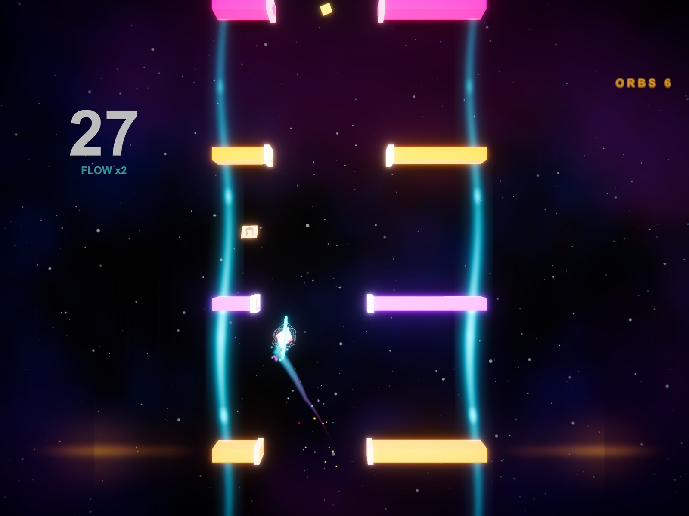
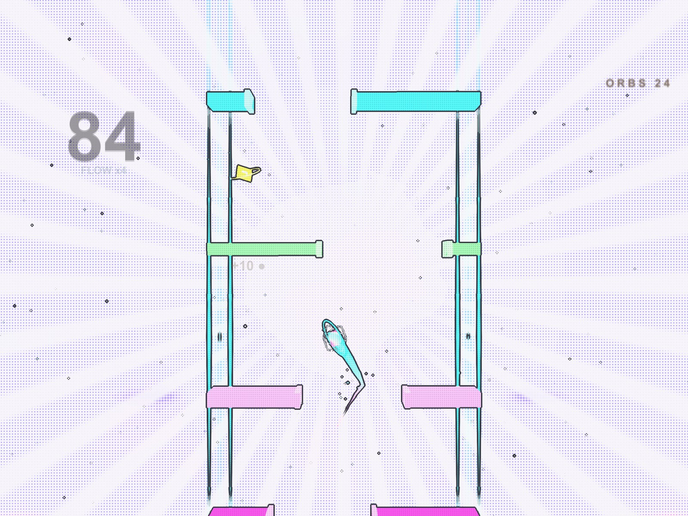
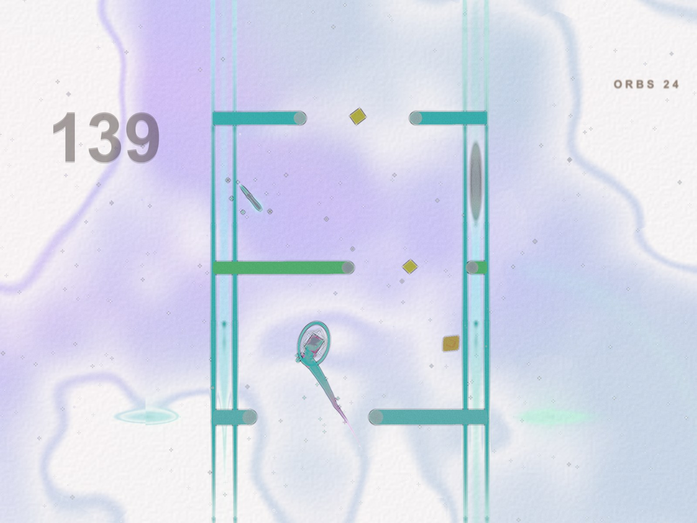

Description
Stellar Jump is a calm one-tap arcade game. Tap left or right to launch your hero through the gaps between glowing neon bars and see how high you can climb. There is no timer and the difficulty never ramps up: runs get long, and the only challenge is keeping your rhythm. Chain clean gates for a FLOW multiplier, skim bars for near-miss bonuses and collect gems that shift the world into a new sector, with its own colours and music.
The short version
A relaxing one-tap neon jumper with 28 radically different art styles, every one of them generated by code. No ads, no timer, plays offline.
History
Stellar Jump was made by one developer as a hyper-casual game that feels calm instead of stressful: no ads, no time pressure, readable obstacles and soft sound. Everything you see and hear in it is generated by code: the bars, heroes, backdrops, user interface, sound effects and a 72-second soundtrack for each of the 21 sectors are produced by scripts, not drawn or recorded. That is what makes the 28 visual styles possible: each one is a different rendering treatment of the same world, from neon to watercolor, cross-stitch on linen, a four-shade handheld LCD and a living phase-contrast microscope slide, rather than a recolour.
Features
- One-tap controls: tap the left or right half of the screen to jump that way
- FLOW multiplier for clean streaks, near-miss bonuses, orbs and rare gems
- 28 visual styles and 21 sectors, each sector with its own calm music
- 11 heroes that play differently: shields, magnets, regeneration, rebirth
- 5 stackable power-ups: Wide Open, Slow Time, Magnet, Double Up, Phase
- Up to 120 fps on ProMotion iPhones and iPads, sub-stepped physics, hit-stop and slow motion
- Wide view on iPad, game controller support
- No accounts, no ads, plays offline
Images
Free to use in coverage of the game. Click for full size.
 iPhone, neon
iPhone, neon
 iPhone, mosaic
iPhone, mosaic
 iPhone, stitch
iPhone, stitch
 iPhone, Slow Time
iPhone, Slow Time


iPad, neon

iPad, comic

iPad, watercolor Key art 2320×720
Video
Gameplay, 12 s, 1080×1350 MP4 · App preview on the App Store page. Longer gameplay footage on request.
One-pager
Stellar Jump one-pager (PDF): the game, its status and monetisation on one page.
Contact
dyers_hurlers_8l@icloud.com. Promo codes, interviews, more footage or a specific style or hero captured on request.